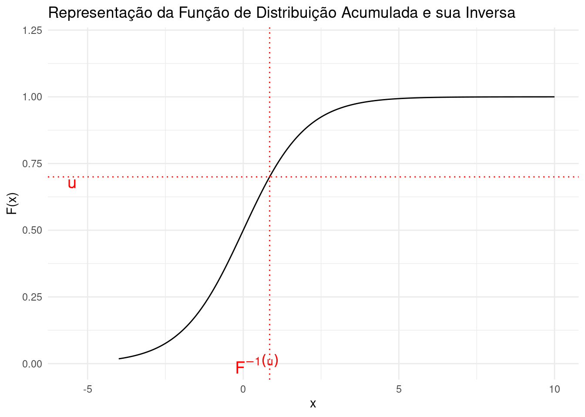
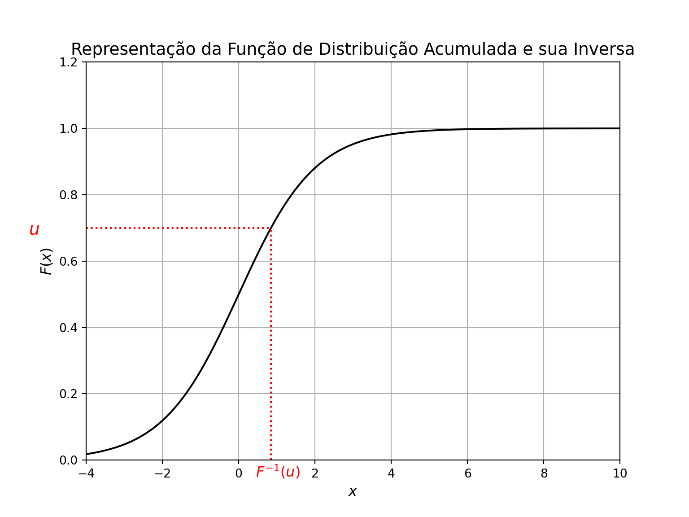
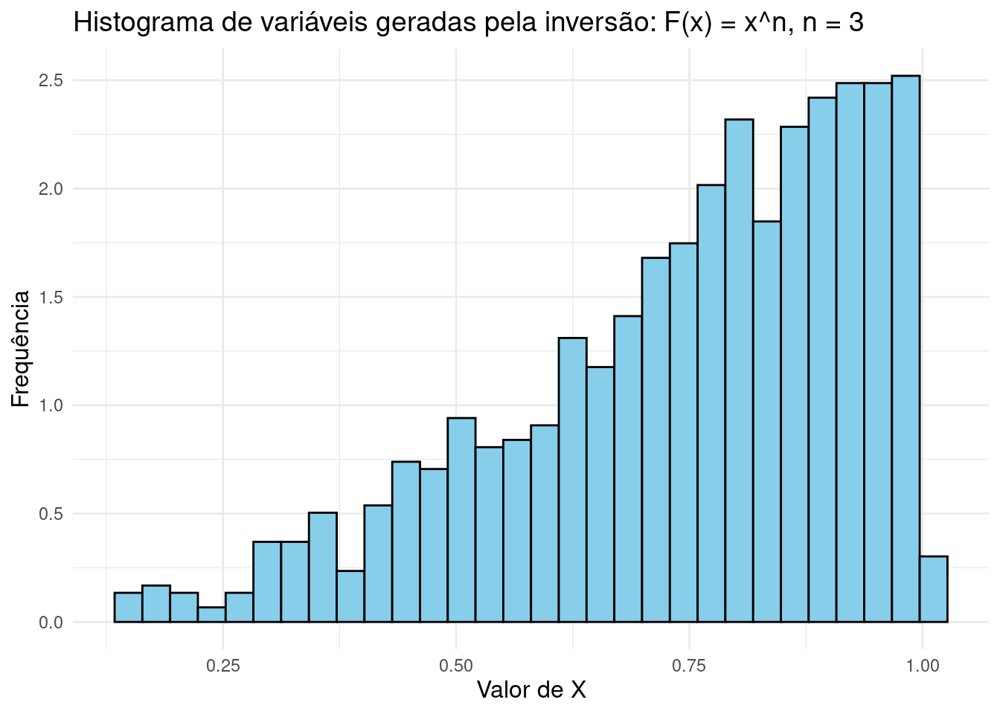
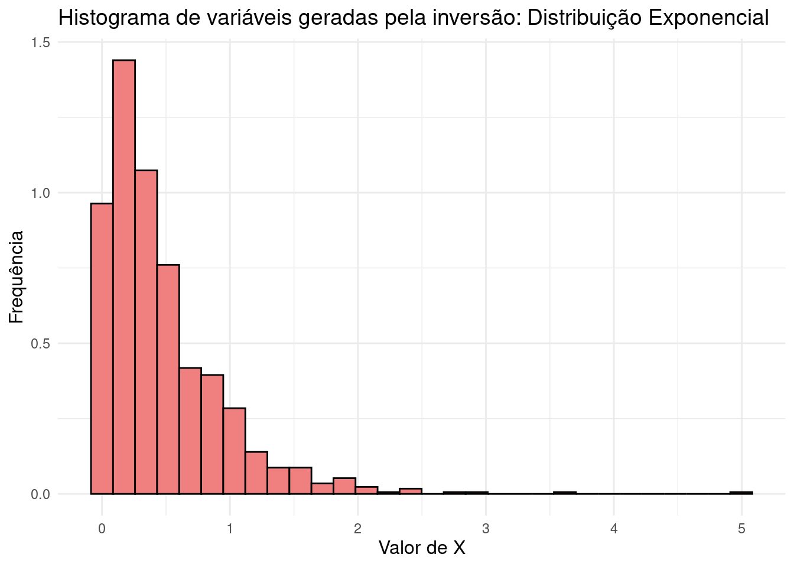
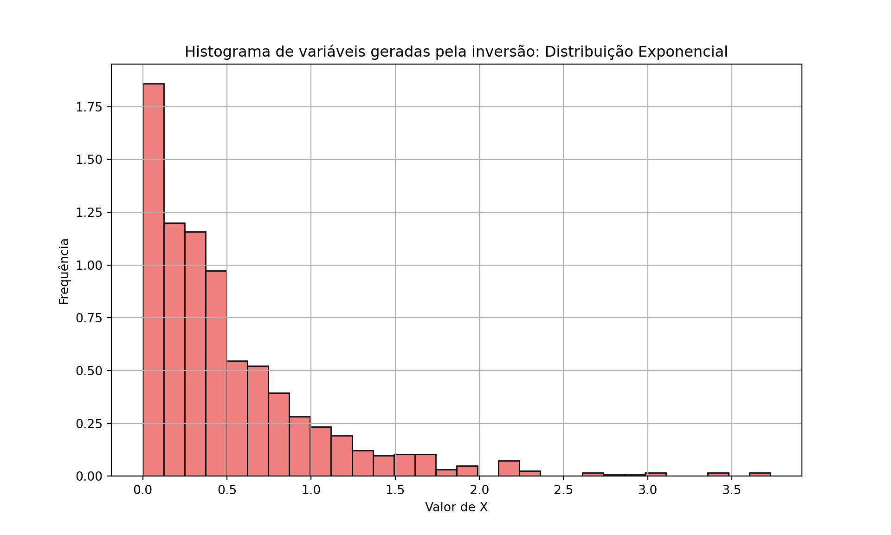
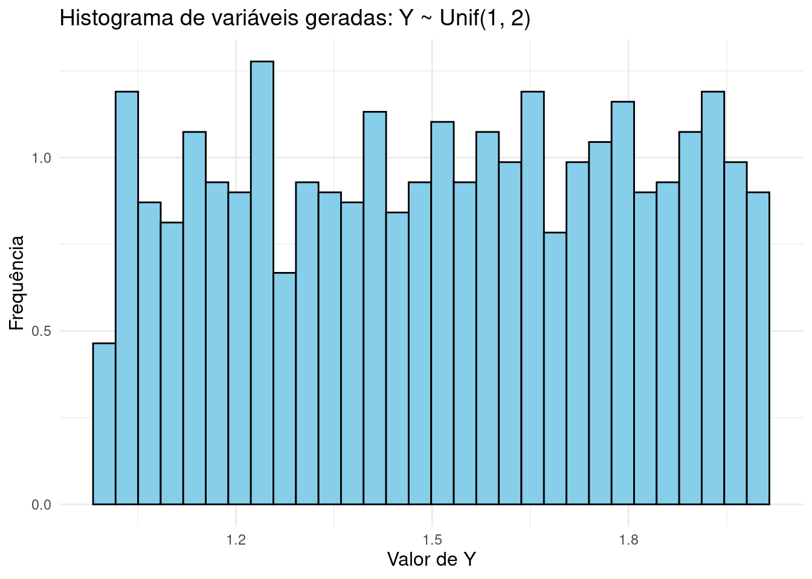
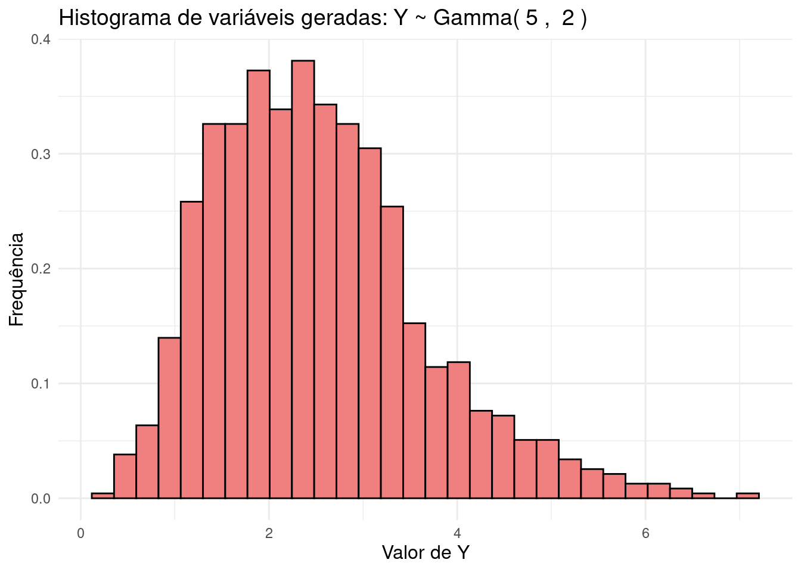
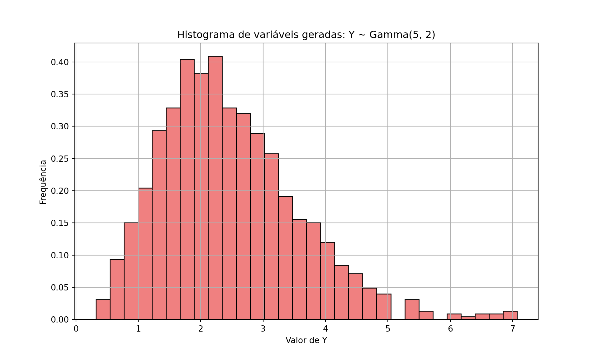

4Geração de Variáveis Aleatórias Contínuas Usando a Técnica da Inversão e Transformações
Os valores que uma variável aleatória \(X\) pode assumir são chamados de suporte da distribuição de \(X\).
Variáveis Aleatórias Contínuas são variáveis aleatórias que têm suporte em um conjunto não enumerável de valores, como intervalos na reta real, \(\mathbb{R}\), ou \((0,\infty)\), por exemplo.
Uma variável aleatória \(X\) contínua tem função de distribuição acumulada (f.d.a.) puder ser expressa como \[
P(X \leq a) = F(a) = \int_{-\infty}^{a} f(x) dx, \quad \forall a \in \mathbb{R},
\] em que \(f: \mathbb{R} \to [0, \infty)\) é uma função integrável, chamada de função densidade de probabilidade.
4.1 Função Inversa
Sabemos que \(F: \mathbb{R} \to [0,1]\) é estritamente crescente quando \(X\) é continua, e, portanto, podemos definir sua função inversa \(F^{-1}: [0,1] \to \mathbb{R}\). A seguinte figura ilustra \(F\) e sua inversa.
# Carregando as bibliotecas necessáriaslibrary(ggplot2)# Definindo a função de distribuição acumulada F(x) - função logísticaF <-function(x) {return(1/ (1+exp(-x)))}# Definindo a inversa da função de distribuição acumulada F_inv(u)F_inv <-function(u) {return(-log((1/ u) -1))}# Gerando valores de x e ux <-seq(-4, 10, length.out =400)u <-seq(0.01, 0.99, length.out =400)# Definindo o valor de U para plotar as linhasu_value <-0.7x_value <-F_inv(u_value)# Criando o gráficoggplot(data =data.frame(x = x, F_x =F(x))) +geom_line(aes(x = x, y = F_x), color ="black") +geom_hline(yintercept = u_value, linetype ="dotted", color ="red") +geom_vline(xintercept = x_value, linetype ="dotted", color ="red") +annotate("text", x = x_value -0.4, y =-0, label =expression(F^{-1}(u)), color ="red", size =5) +annotate("text", x =-5.5, y = u_value -0.02, label ="u", color ="red", size =5) +labs(title ="Representação da Função de Distribuição Acumulada e sua Inversa",x ="x", y ="F(x)") +ylim(0, 1.2) +theme_minimal()

Mostrar código
import numpy as npimport matplotlib.pyplot as plt# Definindo a função de distribuição acumulada F(x)def F(x):return1/ (1+ np.exp(-x)) # Função logística como exemplo de F(x)# Definindo a inversa da função de distribuição acumulada F_inv(u)def F_inv(u):return-np.log((1/ u) -1)# Gerando valores de x e u para plotarx = np.linspace(-4, 10, 400)u = np.linspace(0.01, 0.99, 400) # U entre 0 e 1 (evitando extremos para evitar erros na inversa)# Plotando a função de distribuição acumulada F(x) com truncamento do eixo y no zeroplt.figure(figsize=(8, 6))plt.plot(x, F(x), color="black")# Adicionando linhas pontilhadas para representar U e F_inv(U)u_value =0.7# Exemplo de valor de Ux_value = F_inv(u_value)plt.hlines(u_value, min(x), x_value, linestyles='dotted', colors='red')plt.vlines(x_value, 0, u_value, linestyles='dotted', colors='red')# Etiquetasplt.text(x_value-0.4 , -0.05, r"$F^{-1}(u)$", fontsize=12, color='red')plt.text(-5.5, u_value -0.02, r"$u$", fontsize=14, color='red')# Rótulos e estilo do gráficoplt.title(r'Representação da Função de Distribuição Acumulada e sua Inversa', fontsize=14)plt.xlabel(r'$x$', fontsize=12)plt.ylabel(r'$F(x)$', fontsize=12)plt.ylim(0, 1.2)
(0.0, 1.2)
Mostrar código
plt.xlim(-4, 10)
(-4.0, 10.0)
Mostrar código
plt.grid(True)# Exibir o gráficoplt.show()

4.2 Método da Inversão
Uma maneira de gerar valores de uma variável aleatória contínua \(X\), é o método da inversão, que é originado da seguinte proposição:
Proposição: Seja \(U \sim \text{Unif}(0,1)\). Para qualquer variável aleatória contínua com função de distribuição acumulada \(F\), a variável: \[
X = F^{-1}(U)
\] tem distribuição \(F\).
# Carregar a biblioteca ggplot2library(ggplot2)# Definir o parâmetro n da distribuição F(x) = x^nn <-3# Gerar 1000 valores U de uma distribuição uniforme (0,1)U <-runif(1000, min =0, max =1)# Calcular X = U^(1/n)X <- U^(1/n)# Criar um dataframe para o ggplot2data <-data.frame(X = X)# Plotar o histograma usando ggplot2p <-ggplot(data, aes(x = X)) +geom_histogram(aes(y = ..density..), bins =30, fill ='skyblue', color ='black') +labs(title ='Histograma de variáveis geradas pela inversão: F(x) = x^n, n = 3',x ='Valor de X', y ='Frequência') +theme_minimal() +theme(plot.title =element_text(size =14),axis.title.x =element_text(size =12),axis.title.y =element_text(size =12))# Exibir o gráficoprint(p)

Mostrar código
import numpy as npimport matplotlib.pyplot as plt# Parâmetro n da distribuição F(x) = x^nn =3# Gerando 1000 valores U de uma distribuição uniforme (0,1)U = np.random.uniform(0, 1, 1000)# Calculando X = U^(1/n)X = U**(1/n)# Plotando um histograma dos valores geradosplt.figure(figsize=(10, 6))plt.hist(X, bins=30, color='skyblue', edgecolor='black', density=True)plt.title('Histograma de variáveis geradas pela inversão: F(x) = x^n, n = 3')plt.xlabel('Valor de X')plt.ylabel('Frequência')plt.grid(True)plt.show()
4.3.1 Exemplo 2
Seja \(X \sim \text{Exp}(\lambda)\), com: \[
F(x) = 1 - e^{-\lambda x}, \quad \text{para } x > 0.
\]
A função inversa é: \[
u = F(x) = 1 - e^{-\lambda x} \implies x = -\frac{\log(1 - u)}{\lambda}.
\]
Um pseudo-algoritmo para gerar \(X\) é, portanto,:
# Carregar a biblioteca ggplot2library(ggplot2)# Definir o parâmetro lambda da distribuição exponenciallambda <-2# Gerar 1000 valores U de uma distribuição uniforme (0,1)U <-runif(1000, min =0, max =1)# Calcular X usando a inversa da CDF da distribuição exponencialX <--log(1- U) / lambda# Criar um dataframe para o ggplot2data <-data.frame(X = X)# Plotar o histograma usando ggplot2p <-ggplot(data, aes(x = X)) +geom_histogram(aes(y = ..density..), bins =30, fill ='lightcoral', color ='black') +labs(title ='Histograma de variáveis geradas pela inversão: Distribuição Exponencial',x ='Valor de X', y ='Frequência') +theme_minimal() +theme(plot.title =element_text(size =14),axis.title.x =element_text(size =12),axis.title.y =element_text(size =12))# Exibir o gráficoprint(p)

Mostrar código
import numpy as npimport matplotlib.pyplot as plt# Parâmetro lambda da distribuição exponenciallambd =2# Gerando 1000 valores U de uma distribuição uniforme (0,1)U = np.random.uniform(0, 1, 1000)# Calculando X usando a inversa da CDF da exponencialX =-np.log(1- U) / lambd# Plotando um histograma dos valores geradosplt.figure(figsize=(10, 6))plt.hist(X, bins=30, color='lightcoral', edgecolor='black', density=True)plt.title('Histograma de variáveis geradas pela inversão: Distribuição Exponencial')plt.xlabel('Valor de X')plt.ylabel('Frequência')plt.grid(True)plt.show()

4.4 Simulação de transformações de variáveis aleatórias
Agora que já sabemos uma maneira de simular uma variável aleatória \(X\), descreveremos como gerar valores de uma transformação dessa variável, ou seja, \(g(X)\). Para isso, basta aplicar a função de transformação \(g\) diretamente aos valores simulados de \(X\). Veremos a seguinte alguns exemplos disso em funcionamento.
4.4.1 Exemplo 1: Simulando \(Y \sim Unif(1, 2)\)
Para gerar valores de \(Y \sim Unif(1, 2)\), usamos o fato de que \(Y\) é uma simples transformação de \(U \sim Unif(0, 1)\). A relação é: \[
Y = U + 1.
\]
Assim, podemos usar o seguinte pseudo-algoritmo para gerar \(Y\) a partir de \(U\):
# Carregar biblioteca ggplot2library(ggplot2)# Gerar 1000 valores U de uma distribuição uniforme (0,1)U <-runif(1000, min =0, max =1)# Calcular Y = U + 1 para ter Y ~ Unif(1, 2)Y <- U +1# Criar um dataframe para o ggplot2data <-data.frame(Y = Y)# Plotar o histograma usando ggplot2p <-ggplot(data, aes(x = Y)) +geom_histogram(aes(y = ..density..), bins =30, fill ='skyblue', color ='black') +labs(title ='Histograma de variáveis geradas: Y ~ Unif(1, 2)',x ='Valor de Y', y ='Frequência') +theme_minimal() +theme(plot.title =element_text(size =14),axis.title.x =element_text(size =12),axis.title.y =element_text(size =12))# Exibir o gráficoprint(p)

Mostrar código
import numpy as npimport matplotlib.pyplot as plt# Gerando 1000 valores U de uma distribuição uniforme (0,1)U = np.random.uniform(0, 1, 1000)# Calculando Y = U + 1 para ter Y ~ Unif(1, 2)Y = U +1# Plotando um histograma dos valores geradosplt.figure(figsize=(10, 6))plt.hist(Y, bins=30, color='skyblue', edgecolor='black', density=True)plt.title('Histograma de variáveis geradas: Y ~ Unif(1, 2)')plt.xlabel('Valor de Y')plt.ylabel('Frequência')plt.grid(True)plt.show()
Para gerar valores de \(Y \sim \Gamma(n, \lambda)\), usamos o fato de que a soma de que \(Y\) pode ser representado como \[Y= \sum_{i=1}^n X_i,\] em que cada \(X_i \sim Exp(\lambda)\), e \(X_i\)’s são independentes.
# Carregar biblioteca ggplot2library(ggplot2)# Definir parâmetrosn <-5# número de somaslambda <-2# parâmetro da distribuição exponencial# Gerar 1000 valores U para cada uma das n somasU <-matrix(runif(1000* n, min =0, max =1), ncol = n)# Calcular X_i = -log(1 - U_i) / lambda para cada U_iX <--log(1- U) / lambda# Somar os valores de X para obter Y ~ Gamma(n, lambda)Y <-rowSums(X)# Criar um dataframe para o ggplot2data <-data.frame(Y = Y)# Plotar o histograma usando ggplot2p <-ggplot(data, aes(x = Y)) +geom_histogram(aes(y = ..density..), bins =30, fill ='lightcoral', color ='black') +labs(title =paste('Histograma de variáveis geradas: Y ~ Gamma(', n, ', ', lambda, ')'),x ='Valor de Y', y ='Frequência') +theme_minimal() +theme(plot.title =element_text(size =14),axis.title.x =element_text(size =12),axis.title.y =element_text(size =12))# Exibir o gráficoprint(p)

Mostrar código
import numpy as npimport matplotlib.pyplot as plt# Definindo parâmetrosn =5# número de somaslambd =2# parâmetro da distribuição exponencial# Gerando 1000 valores U para cada uma das n somasU = np.random.uniform(0, 1, (1000, n))# Calculando X_i = -log(1 - U_i) / lambda para cada U_iX =-np.log(1- U) / lambd# Somando os valores de X para obter Y ~ Gamma(n, lambda)Y = np.sum(X, axis=1)# Plotando um histograma dos valores geradosplt.figure(figsize=(10, 6))plt.hist(Y, bins=30, color='lightcoral', edgecolor='black', density=True)plt.title(f'Histograma de variáveis geradas: Y ~ Gamma({n}, {lambd})')plt.xlabel('Valor de Y')plt.ylabel('Frequência')plt.grid(True)plt.show()

4.5 Exercícios
Exercício 1.
Utilizando o método da inversão, simule \(U \sim U(1,3)\).
Exercício 2.
Implemente uma função para gerar uma amostra de tamanho \(n\) da distribuição Exponencial de parâmetro \(\lambda\).
Compare a distribuição empírica dos valores simulados com a densidade da Exponencial \(f(x)=\lambda e^{-\lambda x}, x>0\).
Exercício 3.
Implemente uma função para gerar uma amostra de tamanho \(n\) da distribuição \(Gama(a,b)\), para \(a\) sendo um valor inteiro.
Compare a distribuição empírica dos valores simulados com a densidade da Gama \(f(x)=\frac{b^a}{\Gamma(a)}x^{a-1}e^{-bx}, x>0\).
Exercício 4. Seja \(X\) uma v.a. com função densidade dada por:
\[f(x) = \frac{1}{8}x,\quad 0 < x < 4.\]
Escreva um pseudo-algoritmo para simular um único valor da variável \(X\) pelo método da inversão.
Compare a distribuição empírica dos valores simulados com a densidade de \(X\).